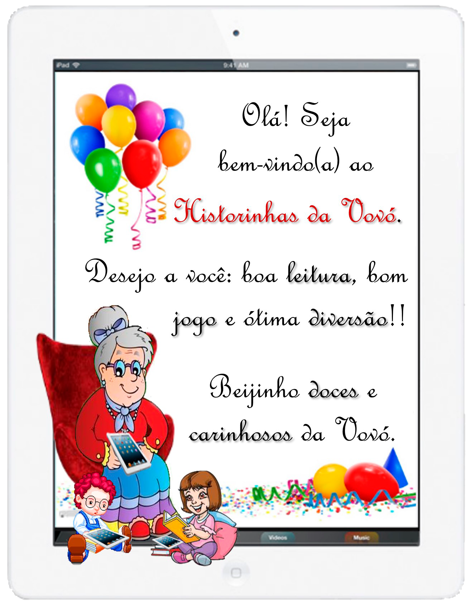
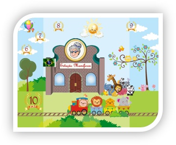
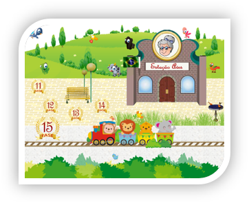
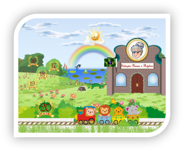
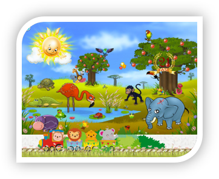

-

-
Era uma vez...
O jogo Historinhas da Vovó convida você
a vienciar o mundo da imaginação através dos
contos de fadas e histórias infantis.
-
Cada fase a ser jogada terá por base a leitura de uma historinha que nos leve a fantasiar todo o contxto da leitura para, consequentemente, aprendermos brincando através de atividades e jogos dinâmicos que se iniciarão por uma cartinha e-mail enviada pela Vovó.
Tal carta e-mail, também nos traz dicas importantes para decobrir o grande mistério que envolve a personagem principal:
Onde será que a Vovó mora?
E aí, curioso(a) para saber mais detalhes e aprendermos brincando?
É só jogar e se divertir...
Baixe agora a primeira estação: Estação Insetos


Clique na imagem acima e baixe já o aplicativo Historinhas da Vovó 1.
A primeira parada do trenzinho dos animais é na Estação Insetos: nela você vai aprender mais sobre a vida desses animais, suas características principais, tudo através de divertidas atividades com dicas enviadas pela Vovó.
Disponíveis em breve!
-
Estação Mamíferos
A segunda parada do trenzinho dos animais é na Estação Mamíferos: aqui você vai ter acesso a informações divertidas sobre esses animais, com dicas e pistas curiosas sobre onde a Vovó mora e, as atividades interativas te levarão ao mundo da imaginação.
-
Estação Aves
A terceira parada do trenzinho dos animais é na Estação Aves: com divertidas informações sobre esses animais, você também terá novas dicas e pistas sobre onde a Vovó mora. Atividades enigmáticas levarão você a descobrir o segredo que envolve esse jogo.
-
Estação Peixes e Répteis
A quarta parada do trenzinho dos animais é na Estação Peixes e Répteis: novas informações surgirão com o novo grupo de animais. com mais pistas e curiosidades que rondam o segredo da Vovó: será que você já consegue descobrir?
-
A revelação
A última parada do trenzinho dos animais é a mais esperada de todas que é A Revelação: aqui você deve reunir todas as pistas e curiosidades descobertas nas estações anteriores; revisando tudo que foi aprendido com novas atividades interativas trazidas pelo trenzinho dos animais, você terá o grande segredo revelado: onde será que a Vovó mora?
E então, curioso(a) para a descoberta final?!
Vamos nessa!!!